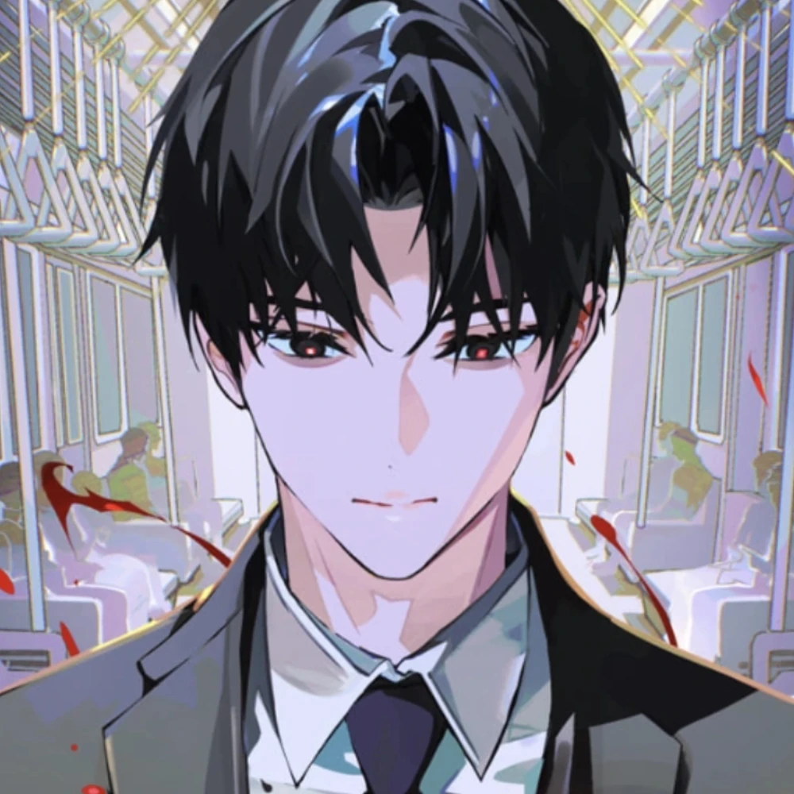
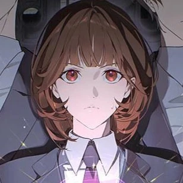

Get to know some our agents here!
Agent Choi
Agent Choi is a member of the Black Tortoise Team 1, that takes on different disasters and saves civilians. He is very private about his personal life and not much is known about him, not even his real first and/or last name. He uses a spiritual sword and a dokkaebi flame when he fights disasters.

Agent Bronze
Agent Bronze is a member of the Black Tortoise Team 1, that takes on different disasters and saves civilians. His real name is Ryu Jaekwan. He got caught into a Annihilation-Sanctioned disaster when he was still in high school and that shaped his whole life, making him want to work for the Disaster Management Bureau. Before he was granted the permission to work at the Bureau, he worked at a low-class disaster bookstore, which made him extremely proficient in talismans.

Agent Grape
Agent Grape is the newest member of the Black Tortoise Team 1, that takes on different disasters and saves civilians. His real name is Kim Soleum. He originally comes from a world without any disasters but he got trapped into this disaster-filled world by accident. He used to work for one of the companies that the Bureau tries to stop and is now acting as a spy for the aforementioned company inside the Bureau.

Agent Mint
Agent Mint is an agent in the White-Tiger Team 1, within the preliminary investigation unit. Her real name is Go Youngeun originally worked for the same selfish company as Kim Soleum, but due to some personal circumstances she ended up working as a spy in the Supernatural Disaster Management Bureau.

Agent Hwagak
Agent Hwagak is an agent in the Site Cleanup Unit. His real name is Jang Heowoon. He also originally worked for the same company as both Kim Soleum and Go Youngeun. And he too started working as a spy for the company for his own personal reasons.